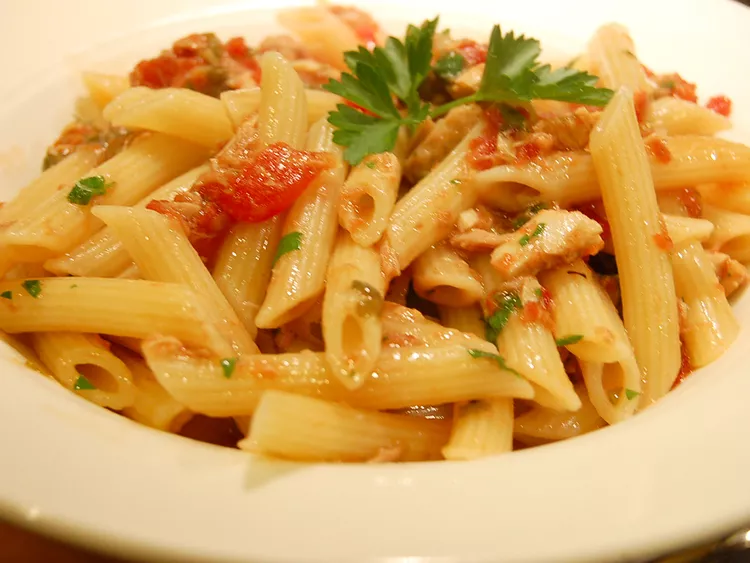

Tuna-Pasta

Description
This is my version of a tuna pasta dish with capers,
anchovies, and tomatoes. I make it at least once
a week as it is my husband's favorite and he
proclaims it's restaurant quality. You can easy
double the recipe if you're cooking for more people.
Ingredients
- ½ (16 ounce) box penne
- 1 (5 ounce) can tuna, packed in olive oil, drained
- ¼ cup olive oil, divided
- ¼ cup finely chopped fresh basil
- ½ large organic lemon, juiced and zested
- salt and ground black pepper to taste
- 1 ounce canned anchovy fillets, drained
- 2 teaspoons capers
- 1 clove garlic, thinly sliced
- 1 (14.5 ounce) can diced tomatoes
- ½ bunch fresh parsley, finely chopped
Steps
- Bring a large pot of lightly salted water
to a boil. Add penne and cook, stirring
occasionally, until tender yet firm to the
bite, about 11 minutes.
- Empty tuna into a bowl and mash with a fork
while pasta is cooking. Mix with 2
tablespoons olive oil, basil, lemon juice,
lemon zest, salt, and pepper.
- Heat the remaining 2 tablespoons olive oil
in a large skillet and fry the anchovies
for 3 minutes. Add capers and garlic; cook,
stirring constantly, for an additional 3
minutes. Add tuna mixture and tomatoes;
simmer sauce for about 5 minutes.
- Drain pasta and add to the sauce. Mix well.
Stir in parsley before serving.